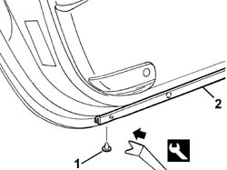

7005A46 FRONT SIDE DOOR LOWER SEAL R R
- Path
- Procedures > 70 FITTINGS > 7005 PASSENGER COMPARTMENT FRONT SIDE DOORS > 7005A LOCATION OF FRONT DOOR WIND NOISES > 7005A46 FRONT SIDE DOOR LOWER SEAL R R
- Kind
- repair procedure (removal / refitting; the operation number is the code)
- Applies to
- all engines; all production periods
- Interactive page
- https://sloeber94.github.io/elrnDB-aGt/en/#/125001763
Applies to: all engines; all production periods
 Removing
Removing
 Refitting
Refitting1. Remove the retaining buttons from the bottom seal using the appropriate tool.
 | Name | Country |
|---|---|---|
1 | Scraper blade | 1.823.015.000 |
2. Remove the bottom seal.

Applies to: all engines; all production periods
Refitting
RemovingCheck that the bottom seal is intact and shows no signs of damage.
Fit the bottom seal.
Fit the new retaining buttons and secure the seal.